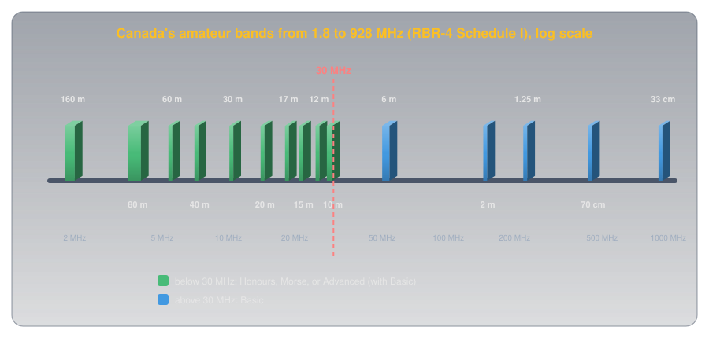
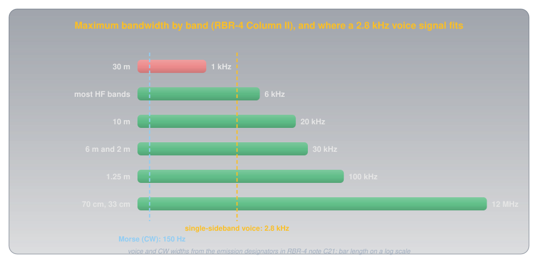
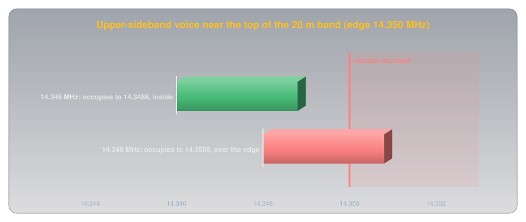
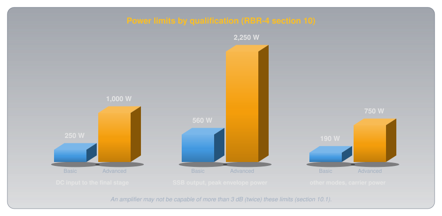
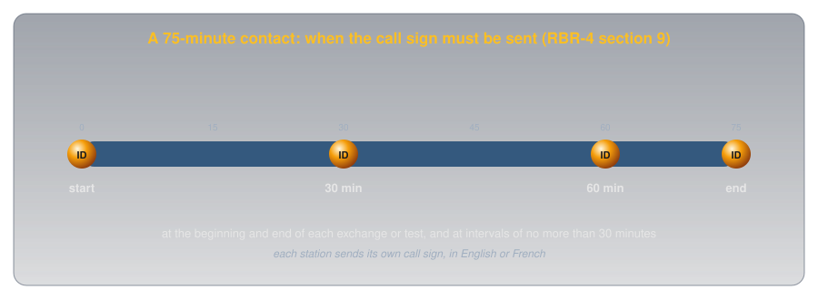

What You May Transmit: Bands, Power, and Identification🔗
Beginner
This article is in the Getting Licensed topic, after Getting Your Amateur Radio Certificate in Canada. No other prior knowledge required. Covers Basic exam section B-001 (Regulations and Policies), topics B-001-013, B-001-015, B-001-016, B-001-017, B-001-018, and B-001-019.
Every legal transmission from a Canadian amateur station answers four questions before it leaves the antenna. Where is it: on a band this operator's qualifications allow? How wide is it: does the whole signal fit inside the band and inside that band's bandwidth limit? How strong is it: within the power limit, and no stronger than the contact needs? And who sent it: is the station identified? Get all four right and the transmission is legal; get any one wrong and it isn't.
The answers all live in one short document, RBR-4, Standards for the Operation of Radio Stations in the Amateur Radio Service (Issue 3, July 2022), which the Radiocommunication Regulations make binding. This article reads it section by section, organized around two ideas:
- Every transmission has an envelope: a frequency range, a width, and a strength. RBR-4 sets all three, and each one follows from sharing the radio spectrum with other users and with each other.
- Every transmission must say who sent it. Identification is what makes a shared band accountable, so the rules for it are strict and simple.
All rules below are quoted from the current RBR-4, section numbers included.
Idea One: The Envelope of a Transmission🔗
The radio spectrum is shared. The amateur service has its own slices of it, some shared with other services, and within those slices thousands of operators share the same frequencies with no one directing traffic. Every limit in RBR-4 is a way of keeping one signal from spoiling the others.
Where: The Bands🔗
RBR-4 section 3.1 says an amateur station in Canada "may operate within the frequency bands set out in the attached Schedule I, in accordance with the operator qualifications identified for the specified band." Schedule I lists 40 bands, from 135.7 kHz to 250 GHz.

Bands are usually named by their wavelength in metres, which is roughly 300 divided by the frequency in megahertz (What Is a Radio Wave? explains why). The 80 m band runs from 3.5 to 4.0 MHz, and 300 ÷ 3.75 = 80; the 2 m band runs from 144 to 148 MHz, and 300 ÷ 146 ≈ 2.05. The bands most operators use:
| Band | Frequencies (RBR-4 Schedule I) | Maximum bandwidth | Qualifications |
|---|---|---|---|
| 160 m | 1.800–2.000 MHz | 6 kHz | Basic plus Honours, Morse, or Advanced |
| 80 m | 3.500–4.000 MHz | 6 kHz | Basic plus Honours, Morse, or Advanced |
| 60 m | 5.3515–5.3665 MHz and four channels (5.332, 5.348, 5.373, 5.405 MHz) | 2.8 kHz | Basic plus Honours, Morse, or Advanced |
| 40 m | 7.000–7.300 MHz | 6 kHz | Basic plus Honours, Morse, or Advanced |
| 30 m | 10.100–10.150 MHz | 1 kHz | Basic plus Honours, Morse, or Advanced |
| 20 m | 14.000–14.350 MHz | 6 kHz | Basic plus Honours, Morse, or Advanced |
| 17 m | 18.068–18.168 MHz | 6 kHz | Basic plus Honours, Morse, or Advanced |
| 15 m | 21.000–21.450 MHz | 6 kHz | Basic plus Honours, Morse, or Advanced |
| 12 m | 24.890–24.990 MHz | 6 kHz | Basic plus Honours, Morse, or Advanced |
| 10 m | 28.000–29.700 MHz | 20 kHz | Basic plus Honours, Morse, or Advanced |
| 6 m | 50–54 MHz | 30 kHz | Basic |
| 2 m | 144–148 MHz | 30 kHz | Basic |
| 1.25 m | 219–225 MHz | 100 kHz | Basic |
| 70 cm | 430–450 MHz | 12 MHz | Basic |
| 33 cm | 902–928 MHz | 12 MHz | Basic |
Schedule I also lists two very low bands, 2200 m (135.7–137.8 kHz) and 630 m (472–479 kHz), and microwave bands from 1.24 GHz to 250 GHz. Every band above 30 MHz is open to Basic.
Two kinds of share-the-band rule ride along with the table. Section 8 says amateur transmissions "shall not cause interference to a station operating in another service nor be protected from interference" caused by one, wherever Schedule I marks the band as shared. And several bands carry notes of their own. On 30 m, note C6 says Canada's amateur use "is not in accordance with the international frequency allocations," so amateurs there must not interfere with other countries' fixed stations. The 60 m band, note C21, is a special case: specific channels, a 2.8 kHz bandwidth, and only voice, data, radioteletype, and Morse. And on 1.25 m, note C11 makes 219–220 MHz a secondary allocation and allows 220–222 MHz only "in exceptional circumstances" to assist in disaster relief.
Radio control of models
Section 5 limits radio control of models to "any frequency within the frequency bands above 30 MHz," so a Basic holder may fly a model on any amateur band above 30 MHz.
How Wide: Bandwidth🔗
A transmitted signal isn't a single frequency: it occupies a range, and that range is its bandwidth. RBR-4 section 4 sets a maximum for every band (Column II of Schedule I) and says how to measure it: "by measuring the frequency band occupied by that signal at a level that is 26 dB below the maximum amplitude of that signal." (Decibels, dB, are a ratio scale for power: 26 dB below the peak is about a four-hundredth of the peak power.)

The bandwidth limit effectively decides which kinds of signal each band may carry. RBR-4's own designators for the 60 m channels give the widths of two common modes: single-sideband (SSB) voice is 2.8 kHz wide ("2K80J3E"), and Morse code (also called CW, for continuous wave) is 150 Hz ("150HA1A"). So:
- Voice is prohibited on 30 m. A 2.8 kHz SSB signal can't fit in that band's 1 kHz limit. Morse and narrow data modes can.
- Fast-scan amateur television doesn't fit below 70 cm. A full television picture needs far more than the 30 kHz allowed on 2 m, or the 6 kHz on 20 m. The 12 MHz allowed on 70 cm makes room for it.
The whole signal must also stay inside the band. A transmitter's dial shows one frequency, but the signal spreads beside it. An upper-sideband voice signal occupies roughly 2.8 kHz above the frequency on the dial:

Dialled to 14.348 MHz, the signal spills past the 14.350 MHz edge, which is out of band even though the dial is in it. The rule near any band edge: make sure the entire occupied bandwidth falls inside the band.
How Strong: Power🔗
RBR-4 section 10 sets the ceilings. For a Basic holder, the limit is:
where expressed as direct-current input power, 250 W to the anode or collector circuit of the transmitter stage that supplies radio frequency energy to the antenna; or where expressed as radio frequency output power measured across an impedance-matched load, 560 W peak envelope power for transmitters that produce any type of single sideband emission, or 190 W carrier power for transmitters that produce any other type of emission.

Advanced holders get four times as much: 1,000 W DC input, 2,250 W peak envelope power (PEP) on SSB, or 750 W carrier on other modes (section 10.3). The output limits are measured at the transmitter's output, or the external amplifier's if there is one, into a matched load. And section 10.1 limits the equipment, not just the operator: an amplifier at the station "shall not be capable of exceeding by more than 3 dB the transmitting power limits," so no more than twice the limit. ISED's frequently asked questions put it the same way: "no more than twice (3dB)."
A few bands have limits of their own, set by the notes in Schedule I:
- 60 m (note C21): a maximum effective radiated power of 100 W PEP per channel. Effective radiated power counts the antenna's gain, so a directional antenna lowers the power the transmitter may produce.
- 2200 m and 630 m (notes 5.67A and 5.80A): no more than 1 W equivalent isotropically radiated power (EIRP). Again the antenna's gain counts toward the limit.
The ceiling isn't the target. The international rule all of this sits under, the International Telecommunication Union (ITU) Radio Regulations, No. 15.2, says "transmitting stations shall radiate only as much power as is necessary to ensure a satisfactory service" (quoted in an ITU briefing). In practice, use the minimum power that gets the contact through: a 5 W handheld that reaches the repeater is the right amount.
Retransmission, Repeaters, and Other Technical Rules🔗
RBR-4 section 11 adds a handful of rules about how a transmitter behaves:
- Unmodulated carriers: "An unmodulated carrier in a frequency band below 30 MHz may be transmitted only for brief tests."
- Automatic retransmission: signals "may not be automatically retransmitted in a frequency band below 29.5 MHz unless those signals are received from a station operated by a person qualified to transmit in the frequency bands below 30 MHz." A repeater that Basic-only operators can use therefore needs its output at 29.5 MHz or above: the top of the 10 m band (29.5–29.7 MHz) and up.
- Amplitude modulation: "limited to no more than 100% modulation."
- Frequency stability: below 148.000 MHz, at least as good as "that which is obtainable using crystal control."
- Measurement: every station needs a means of "determining the transmit frequency to the same degree of accuracy as would a crystal calibrator," and a voice (radiotelephone) transmitter needs a means of "indicating or preventing overmodulation."
Setting up a repeater is a separate privilege: the Radiocommunication Regulations, section 44, require the Advanced Qualification to install a repeater or a club station. Basic holders may use repeaters, and RIC-3 allows them to operate cross-band repeaters.
Whose Privileges Apply🔗
When two operators with different qualifications share a station, the one in control sets the limits. The Regulations, section 46, let a certificate holder permit others to operate "subject to compliance with the terms and conditions of that holder's certificate." So if a Basic holder lets an Advanced operator use their station under their own supervision, the Basic holder's privileges apply; and a Basic holder operating an Advanced friend's station is still limited to Basic privileges. The station's equipment doesn't change what the operator in control may do.
Idea Two: Every Transmission Says Who Sent It🔗
A shared band only works if every signal can be traced to its operator. RBR-4 section 9 makes identification simple:
The operator of any amateur station shall transmit the applicable identification, in English or French, at the beginning and end of each period of exchange of communication or test transmission, and at intervals of no more than 30 minutes throughout the period of exchange of communication.

- What to send: "the assigned call sign" (section 9). Each station identifies itself; neither identifies the other.
- When: at the start, at least every 30 minutes, and at the end. A test transmission follows exactly the same rule as a contact.
- In what language: English or French.
- How a Canadian call sign starts: with VA, VE, VO, or VY, then the digit for the region (RBR-4 Schedule V; Getting Your Certificate explains the format).
Visitors identify differently. A United States amateur operating in Canada uses their own Federal Communications Commission call sign, adds "mobile" or "portable" by voice (or an oblique stroke, "/", in Morse), and adds the Canadian prefix for where they are: a station from the United States operating in Ontario identifies with its own call sign and "portable VE3."
Common Misconceptions🔗
- "If the dial is in the band, I'm legal." The whole signal has to be in the band. Near an edge, the dial frequency isn't enough.
- "The maximum power is the power to use." The ceiling is a ceiling. The rule underneath it is the minimum power that does the job.
- "Basic can't use HF at all." Basic alone can't, but Basic with Honours, Morse, or Advanced can, and those apply to the same certificate.
- "I can transmit briefly without identifying if I'm only testing." Tests follow the same identification rule as contacts.
Practice🔗
1. Which Bands?
A Basic-only operator wants to try 6 m (50–54 MHz), 10 m (28.0–29.7 MHz), and 70 cm (430–450 MHz). Which may they use?
Solution
6 m and 70 cm, both above 30 MHz. Not 10 m: it's below 30 MHz, which needs Honours, Morse, or Advanced added to Basic.
2. Name the Band
Which band is 7.0 to 7.3 MHz, and why is it called that?
Solution
The 40 m band. Wavelength in metres is about 300 divided by the frequency in megahertz: 300 ÷ 7.15 ≈ 42 m, rounded to the band's name, 40 m.
3. Will It Fit?
Can you send single-sideband voice on 10.120 MHz? Why or why not?
Solution
No. 10.120 MHz is in the 30 m band, whose maximum bandwidth is 1 kHz. SSB voice is about 2.8 kHz wide, so it can't fit. Morse and narrow data modes can.
4. At the Edge
Your radio is set to upper sideband at 14.349 MHz. Is the signal inside the 20 m band?
Solution
No. The signal occupies roughly 2.8 kHz above the dial: 14.349 + 0.0028 = 14.3518 MHz, past the 14.350 MHz edge. Move down until the whole signal fits, below about 14.347 MHz.
5. The Power Ceiling
A Basic holder with a single-sideband transmitter: what's their maximum peak envelope power, and what power should they actually use?
Solution
560 W PEP is the ceiling (RBR-4 section 10.2). They should use the minimum power needed for the contact.
6. Identification
A net runs for 70 minutes. When must each station identify?
Solution
At the start, at intervals of no more than 30 minutes (so by 30 and 60 minutes at the latest), and at the end, each with its own call sign, in English or French.
Quick Recap🔗
-
Four questions
Where, how wide, how strong, and who. RBR-4 answers all of them.
-
The 30 MHz line
Basic: every band above 30 MHz. Below it: Basic plus Honours, Morse, or Advanced.
-
Bandwidth
Measured 26 dB down. 6 kHz on most HF, 1 kHz on 30 m, 20 kHz on 10 m, 30 kHz on 6 and 2 m, 12 MHz on 70 cm.
-
The whole signal in band
Near an edge, the signal's width matters, not just the dial.
-
Power
Basic: 250 W DC input, 560 W PEP SSB, 190 W carrier. Advanced: 1,000, 2,250, 750. Use the minimum that works.
-
Technical rules
Unmodulated carriers below 30 MHz only for brief tests. AM at most 100%. Crystal-control stability below 148 MHz. Measure your frequency.
-
Identify
Your own call sign, at the start, every 30 minutes at most, and at the end. English or French. Tests too.
-
On the exam
Band edges for 160, 80, 40, 20, 15 and 10 m; 30 kHz on 6 and 2 m, 20 kHz on 10 m, 6 kHz on HF; no SSB on 30 m; Basic's 250 W input, 560 W PEP, 190 W carrier; Advanced's 2,250 W PEP; 100 W ERP on 60 m; Basic repeaters output at 29.5 MHz or above; models above 30 MHz; the operator in control sets the privileges.
On the exam: two wordings to know
The bank's answer for when you may transmit without identifying is "only to control a model craft." RBR-4 doesn't spell that exception out; it only limits model control to the bands above 30 MHz (section 5). Learn the bank's wording. And for the station's frequency-measurement requirement, the bank's answer is that every station must be able to measure frequency, whatever the mode.
What's Next🔗
That's the technical envelope of a legal signal. What You May Say covers what goes inside it: the content rules, who may be at the microphone, sharing bands with other services, and what changes in an emergency.
Further Reading🔗
Regulations
- RBR-4: Standards for the Operation of Radio Stations in the Amateur Radio Service — Issue 3, July 2022: Schedule I's bands and bandwidths, power, identification, and technical requirements
- Radiocommunication Regulations — sections 44 to 46: what needs Advanced, and who may operate a station
- RIC-3: Information on the Amateur Radio Service — each qualification's privileges in plain language
- ISED: Amateur Radio Frequently Asked Questions — amplifier capability, out-of-band transmitters, and visiting operators
Deep Dives
- ITU Radio Regulations — Wikipedia — the international treaty the Canadian rules sit under
Related Articles
- Getting Your Amateur Radio Certificate in Canada — the qualifications, the exam, and call signs
- ISED Basic Qualification Anki Deck — every B-001 question, for drilling